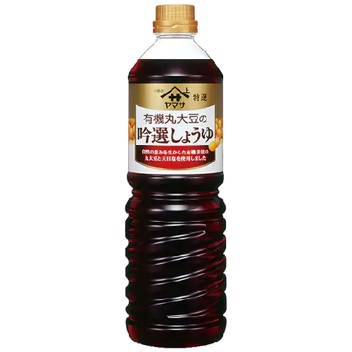
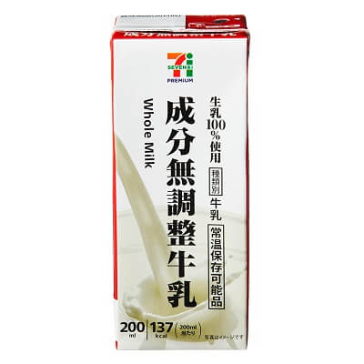

Rice
-
-all Rice 100%
-
Perfect for traveller you just need a microwave or boiled water:
-instant Rice: Iris Oyama
for cooking
-
Yamasa - Soya Sauce Yuki Maru-Daizu Shoyu

-
Rice vinegar

-
-
Sesame Oil

-

-
Mirin

-
Only from USA/with KSA
Tofu- Morinaga: all products with KSA symbol

-
Nori: We recommand to buy nori with Kosher symbol if it's avaible
Only 100% nori is authorized BUT ! You need to be prudent and verify
and check each sheet, check under the light for micro crayfish or micro crustaceans.

-
Kirkland: You can find nori with Star-K logo at Costco supermaket
Drinks
-
Sake: all Junmaishu
-
Beer: all pure beers (生ビール) without flavors are kosher

-
Milk: ! chalav nochri only :
100% milk 牛乳/成分無調整 生乳100％ exemple:

-
Coffee: boss 100% black coffee
-
Tea: Pure tea 生茶:
Barley tea, Green tea